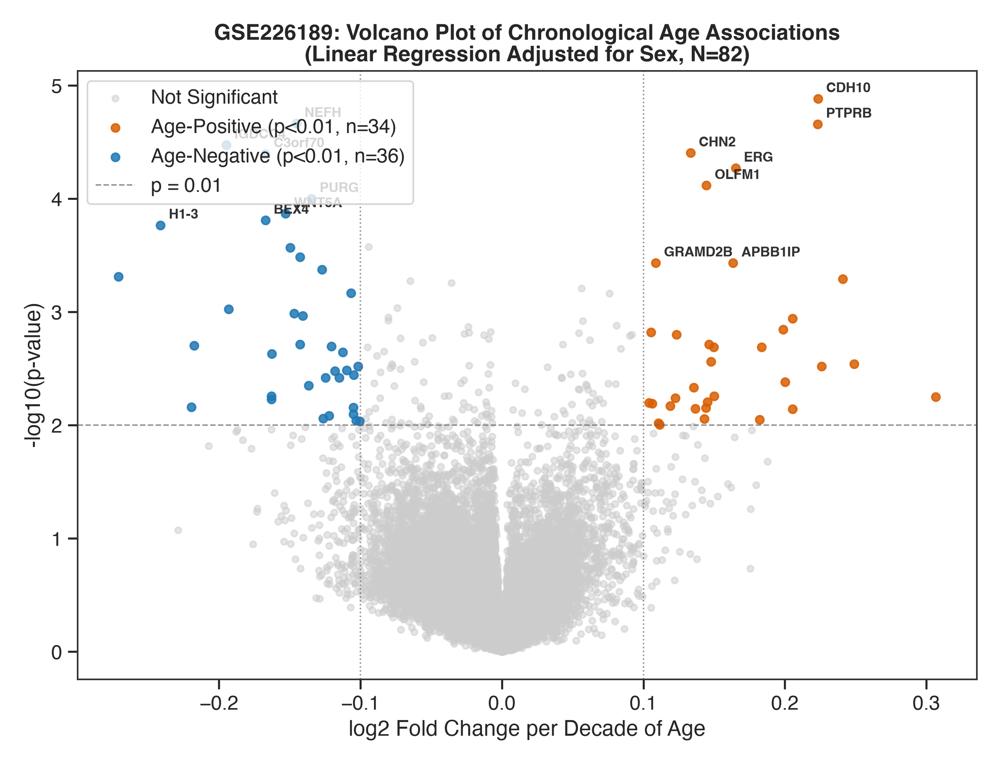
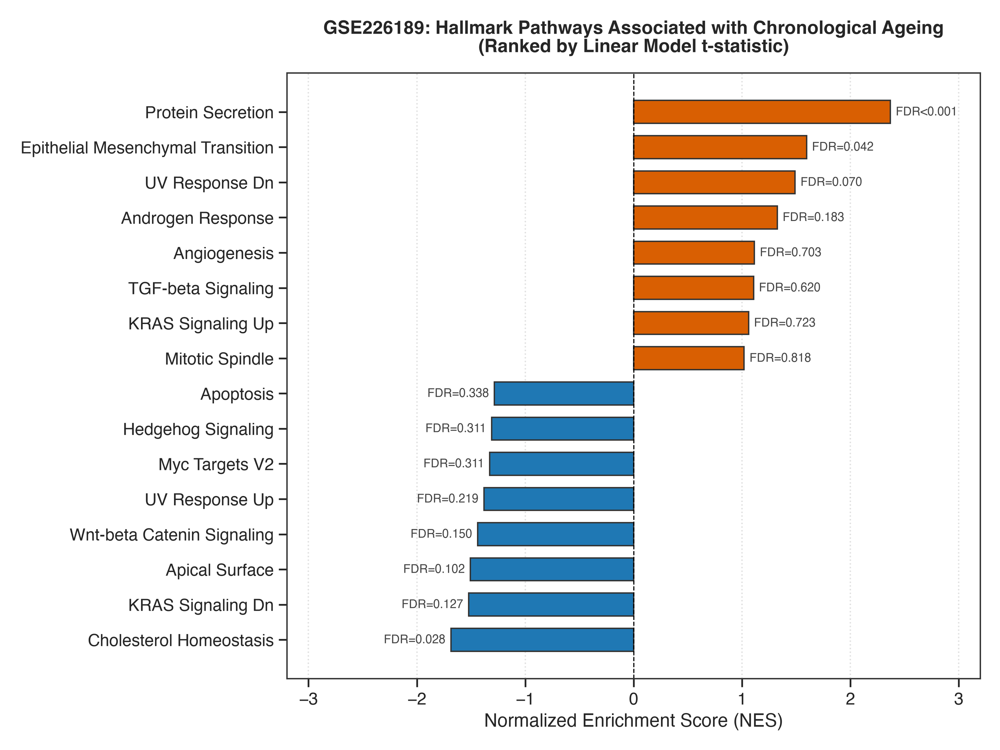
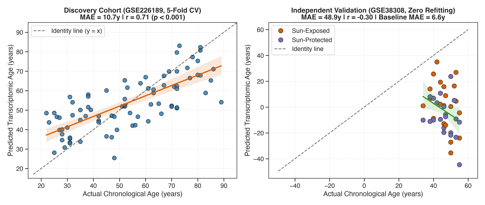

Introducing SkinAge Atlas: An end-to-end computational biology platform analyzing chronological senescence and UV photoaging across independent human cohorts.
Continuous linear regression adjusted for biological sex in primary fibroblasts (GSE226189), paired with intra-individual sun-exposed vs protected facial biopsies (GSE38308).


Robust upregulation (NES = +2.37, FDR < 0.001) driving chronic pro-inflammatory signaling and extracellular matrix degradation.
Significant downregulation (NES = -1.69, FDR = 0.028) identifying molecular breakdown of skin lipid barrier integrity.
Regularized Elastic Net trained with strictly leak-free 5-fold cross-validation on RNA-seq, and evaluated on independent whole skin without refitting.

12 Publication-Quality Figures • Interactive Plotly & Streamlit Dashboard • Zero Data Leakage
Bioinformatics • Drug Target Discovery • Clinical & Translational Biomarkers